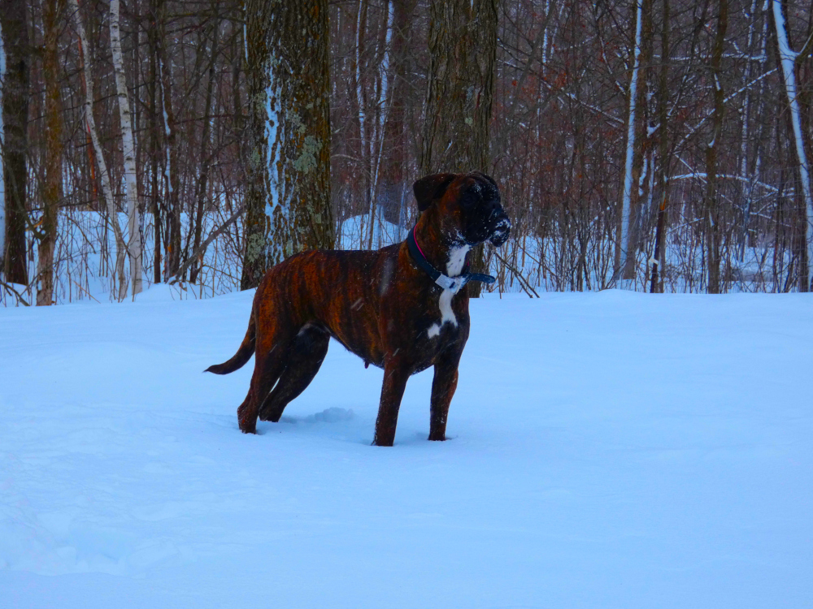

Kaya Jibaya von Bachbett, CGC, TKN
Jibaya was born to work. She is harder, more serious and ferocious than her 1/2 brother Indy and never backs down from anything, coming back more enthusiastically the more she is pushed. She learns quickly and especially loves Protection work. She is extremely active and full of energy, seeming to never tire. She loves long walks/runs in the woods around our farm and anywhere else, but sticks closer to me than Indy, enjoying interacting with me along the way more than exploring on her own. She is a very happy, healthy and beautiful girl who will produce outstanding working dogs.
Jibaya was born on June 19, 2021, has an OFA Normal heart, OFA Good hips, is DM and ARVC clear and has tested as homozygous brindle, meaning she has two copies of the brindle color allele so can only have brindle offspring. She earned the Canine Good Citizen (CGC) title at only 5 months of age, also has a Trick Dog Novice (TKN) title and is currently in training for Agility and IGP.
Jibaya is a serious working dog, but still also a Boxer goofball.
Jibaya is currently pregnant, confirmed by ultrasound, sired by Cliff vom Grand Kevin, Police K9, IPO2, DPO1, FH1, with plain brindle puppies due May 5, 2024. Email for more information and Puppy Applications!


Trick Dog Novice title submission video, done after only 3 Agility training sessions: